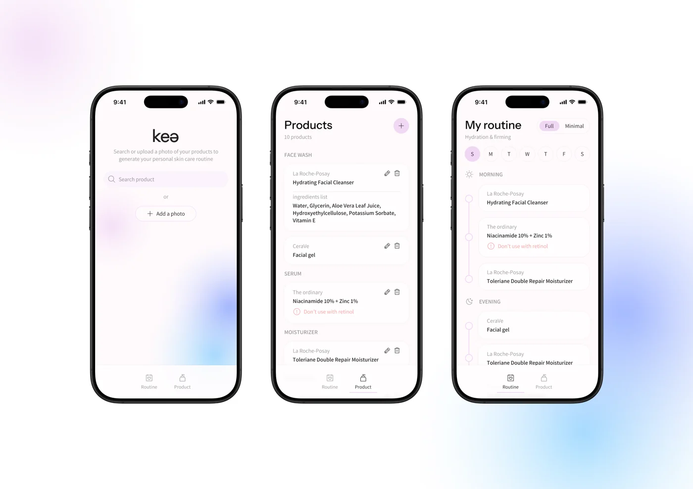

The portfolio as a designer's canvas: cool grey ground, white frames, tool-style labels, and a selection box for every interactive state. Use the toolbar at the bottom to switch to Hebrew. The site-facing parts flip to RTL; these notes stay in English.
TalLavie
Designing mobile apps, dashboards and AI experiments. Draft copy

The hero is a composition, not a headline plus buttons: your name set large next to a small board of real work, arranged the way frames sit on a canvas. On load, a collaborator cursor tagged "Tal" moves in and selects a project (it runs once and then rests). The pink "48" is a redline, a spacing mark from design handoff, used once as a hint of how you work. The MuniBox and Hertz frames are hatched placeholders until real screens arrive.
Canvas, ink, and four pastels with set jobs
I moved away from warm off-white. A cool grey with a slight violet tint reads as a design-tool canvas, so white frames stand out on it. The pastels are surfaces only, never text. Every text pairing passes WCAG AA; the ratios below are calculated live from the tokens.
Neutrals
Pastels (surfaces)
Interaction
One pastel per project
An editorial serif, paired per script, over a tool-like sans
Display: Fraunces for Latin and Frank Ruhl Libre for Hebrew. Both are soft, high-contrast serifs and sit well together on one line. Text and UI: IBM Plex Sans with Plex Sans Hebrew, designed as one family with matched proportions. Labels and numbers: Plex Mono, for frame names, dimensions and dates. I checked every font file: all Hebrew letters and final forms are covered, plus maqaf, geresh and gershayim, ₪ and niqqud. Hebrew gets no negative letter-spacing, no uppercase, and extra line height.
clamp 64–168px
clamp 32–52px
24px
lh 1.5 / 1.7 he
max 65ch
All placeholder sentences on this page are type samples, not portfolio copy.
A strict grid, broken on purpose
12 columns on desktop, 8 on tablet, 4 on phones. Content sits on the grid; one element per section is allowed to break it, such as an image that crosses the gutter or a card that drops a row. The spacing scale is built on 4px.
Spacing scale
Columns
Max content width 1360px. Page margins scale from 16 to 56px.
Selection is the interaction language
Hover a button or card with a mouse, or Tab to it with the keyboard: both show the same selection box with corner handles. Keyboard users get the strongest version of the signature effect, not a fallback. Corners are nearly square; only buttons and the toolbar are slightly rounded.
Draft copy Text not yet approved by Tal.
Selected work
3 projectsMuniBox
Mobile app and admin dashboard. Description pending.
Hertz portal
Description pending.
AI playground
kea, a designers' calendar, a Boost booth wall, and more experiments.
Each card is a frame: name and type sit above the image like a Figma frame label, and each project keeps its own pastel. The grid is uneven on purpose (wide, narrow and dropped, then a centered wide card) but still lines up on 12 columns. On phones it becomes one column. With a mouse, a small "Open case study" tag follows the cursor over cards; it never appears on touch devices, and the card works without it. Images: plain screen exports on the project's pastel will replace the current device mockups, so the three cards match.
Things settle into place, like objects on a canvas
One easing curve for everything: quick out, soft landing. Three durations: 140ms for feedback, 240ms for UI, 560ms for reveals. Motion explains where things come from and where they go; it never holds back content.
Reveal on scroll
Elements rise 14px and fade in, 70ms apart. Only below the first screen, only once. Content never waits for script to become visible.
Zoom into a frame (page transition)
Opening a project grows its card into the case-study page, like zooming into a frame. In the real site this uses the browser's View Transitions; browsers without it get a simple crossfade. Click the lilac card.
Scrollytelling, used sparingly
Inside case studies only, and only where the work has stages to compare (sketch → wireframe → final). The visual stays pinned while text scrolls beside it. Normal scrolling throughout; no scroll hijacking. On phones it becomes a plain sequence of images and text.
Reduced motion: with the system setting on, all movement becomes instant or a short fade, the hero cursor appears already in place, and the cursor tag is turned off. Same content, same functions. Mobile: no cursor effects and no pinned sections; reveals stay, kept short.
Hebrew is designed, not mirrored by accident
- Layout flips through the page direction setting and start/end spacing rules; no component gets reversed by hand.
- Arrows and the cursor flip. Screenshots, logos and charts never do.
- Emails, URLs, version numbers and English tool names are isolated so punctuation stays in the right place (compare the two cards). The email above is example data.
- The hero keeps its composition and swaps sides: the name starts at the right edge and the board of work sits on the left.
- Hebrew copy is written gender-neutral for now (for example "יצירת קשר", not an imperative) until you tell me how you want to be addressed.
What I'm asking you to sign off
- Concept: the working canvas. Grey canvas, white frames, frame labels, selection box as hover and focus state, collaborator cursor in the hero.
- Palette: cool violet-grey neutrals, four pastels used as surfaces, one violet for interaction, one pastel per project.
- Type: Fraunces + Frank Ruhl Libre for display, IBM Plex Sans + Plex Sans Hebrew for text, Plex Mono for labels.
- Navigation: a floating toolbar at the bottom center, like a design tool, on every screen size (easy to reach with a thumb on phones). Name mark, Work, About, Contact, language switch. The alternative is a top bar; the bottom position is the riskier, more distinctive choice.
- Motion: one easing curve, three durations, zoom-into-frame page transition, scrollytelling only in case studies.